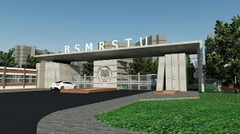

Welcome to the website of Gopalganj Science and Technology University (GSTU). GSTU was established at 2001. This university has a great vision to flourish research and innovation in the field of science and technology. GSTU prides itself for the depth of its involvement in science and technology. It has a great vision to demonstrate its excellence and brilliance in teaching and research. The esteemed academicians have dedication and commitment in conveying their wisdom and enlightening the path of the national development beyond normal boundaries. From its humble beginning in 2001, GSTU has expanded its frontiers in various fields of science and technology such as Computer Science and Engineering, Electrical and Electronic Engineering, Applied Physics and Electronics, Mathematics, Statistics, Analytical and Environmental Chemistry, Pharmacy, Management, Accounting and Information Systems, Economics, Sociology, Public Administration, English and Bangla. It has established Bangabandhu Institute of Liberation War and Bangladesh Studies in order to confer M.Phil. and Ph.D. degrees. GSTU strives towards excellence through the practice of high quality culture in teaching and research. It aims to become a world class university with the vision of being an academic hub that creates the intellectual capital required for the development of the nation and sustaining the growth of the country. Attention is paid to global social and cultural changes for framing the academic programme. It maintains a constant link with industries and businesses. I hope that anyone who visits this website will get a clear picture of GSTU as a whole and will help him make the right choice. Discover the university for yourself, explore the available opportunities to develop your potentials and realize your dreams.
Welcome to our department. This department was established with the objective of imparting quality education in the relative field. The department has modern facilities for teaching, learning and research. Our department offers a wide array of research opportunities and programs of study at undergraduate and postgraduate level. With rapidly evolving technology and the continuous need for innovation, the department has produced quality professionals holding important positions in the industry in home and abroad.
©2025 GSTU All rights reserved. Developed By: ICT Cell
